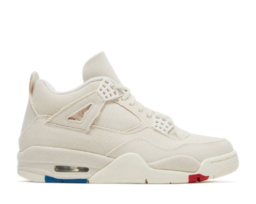
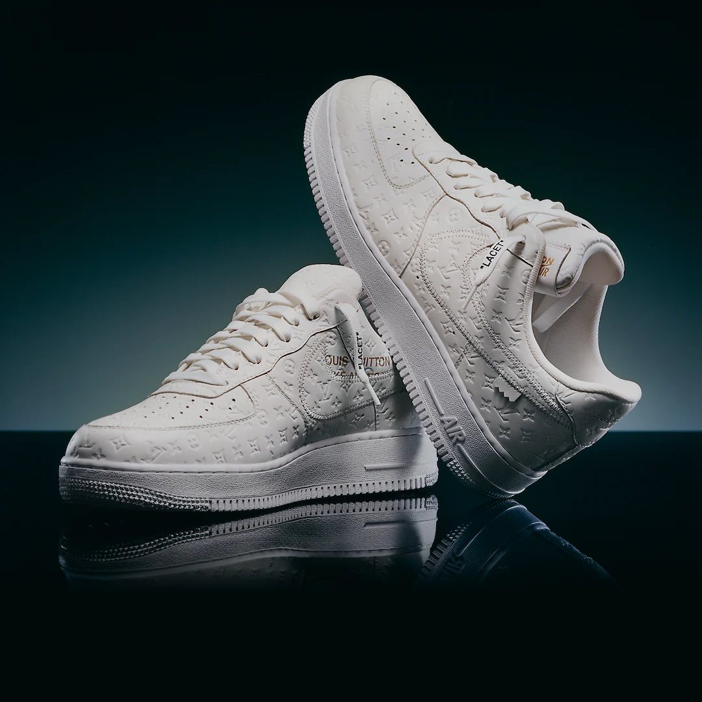
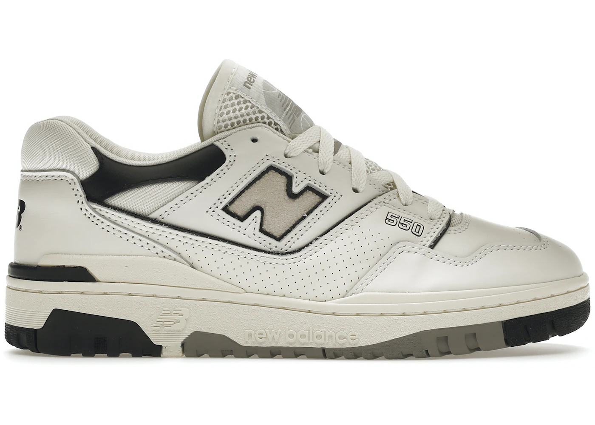

Jordan 4 Retro canva
Questo paio di scarpe è l'ideale per un outfit minimal ma efficace e consentono di ottenere un bel contrasto con colori scuri.

Air Force 1 x Louis Vuitton Le Air force 1 è per eccellenza il modello più venduto
per il famoso brand americano Nike e, in occasione del 40° anniversario, ne è
stata realizzata una versione in collaborazione con il
celebre marchio Louis Vuitton.

New Balance 550
Le New Balance 550 è un modello che, durante il 2022, è stata una vera e propria sorpresae tramite le sue numerose colorazioni, ha conquistato i cuori di numerosi amanti dello streetwear.
Nike Dunk High Retro
Le Nike Dunk High Retro è una delle tante versioni che il brand americano ci propone, ormai sono comunemente diffuse tra i giovani i modelli low ma il fascino delle high rimane sempre unico ed inconfondibile.